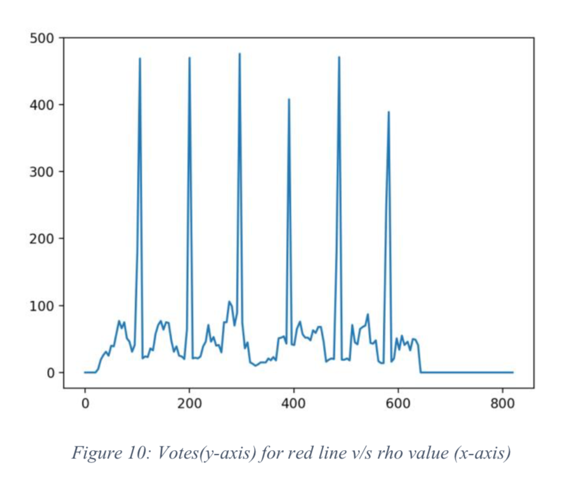

Hough Transform
Introduction
The Hough Transform is a technique used to identify lines and shapes within an image. Here, we will detect red lines, blue lines and coins in the following image.
Methodology
In order to detect blue lines and red lines on the image, I first applied Sobel operator on it to extract the edges from the image. Then thresholding the image to get the binary image. Now creating an accumulator array [rho,theta] to store the votes from the edge points for each theta and row with some thresholding on the rho.
Then calculating which angle got the maximum votes and it was found that 3°and 36° got the maximum votes which implies that most of the edge points belong to these angles for some rho. Now calculating the local maxima to get the rho values.
From the figure 9, we can select the suitable thresholding for finding the local maximum value of rho. Here, peaks corresponds to the blue lines in the image with 36° theta value. The following figure shows the detected blue lines:
 Similarly from the figure 10, we can select the suitable thresholding for finding the local maximum value of rho. Here, peaks corresponds to the red lines in the image with 3° theta value. The foloowing figure shows the detected red lines:
Similarly, for detecting coins taking radius range from 20 to 30 and theta from 0° to 360° and using parametric form. The following figure shows the detected coins: